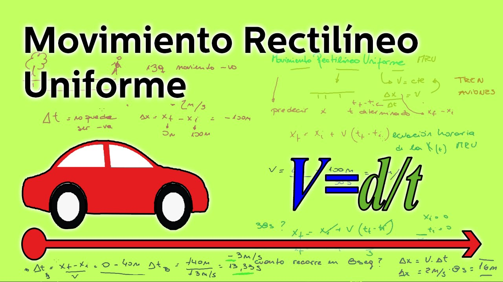
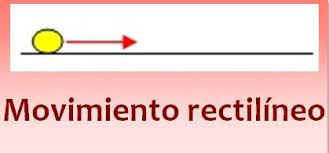
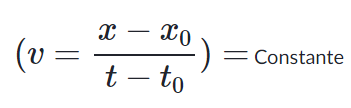
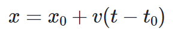
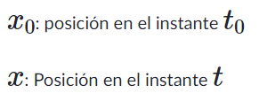

Movimiento rectilineo uniforme y MRUV

En cuanto el concepto de rapidez podemos decir, que no es más que la magnitud de la velocidad Para medir este valor de la rapidez con que se desplaza un móvil durante su recondo, debemos de dividir la trayectona de su desplazamiento, es decir la distancia que hay entre el punto inicial y el punto final (d), entre el tiempo que emplea en recorrer esa distancia
En Fisica, a este cociente (distancia/tiempo) se le conoce como la magnitud de la VELOCIDAD, y ésta es una magnitud fisica la cual es una de las caracteristicas que posee todo cuerpo en movimiento a través del cual podemos diferenciar, cuanto mayor menor es la rapidez de un movimiento con respecto a otro
La velocidad es una magnitud física que además de tener valor numérico (rapidez o magnitud) tiene dirección y sentido, por eso los agentes de tránsito, para determinar en un choque vehicular cual de los conductores tuvo culpa en ello, le es preciso determinar además de la rapidez con que viajaban los vehiculos, su dirección y sentido
Trayectoria: es el camino recorrido por un móvil, que va ocupando distintas posiciones sucesivas en el transcurso de su movimiento durante un tiempo determinado con respecto a un punto de referencia.
Desplazamiento: de un móvil, es el segmento de recta orientado que une la posición inicial y final con respecto a un punto de referencia.
Distancia: es simplemente el valor de la magnitud de la longitud, que indica que tan alejado está un punto de otro, considerando toda la trayectoria recorrida. Ejemplo 90 km es la distancia entre León y Managua. En este caso la trayectoria no coincide con el desplazamiento porque la trayectoria sigue la forma de la carretera.
Cuando el movimiento se realiza en línea recta, la trayectoria coincide con el desplazamiento.
El Movimiento Rectilineo Variado (MRV): es aquél movimiento en el cual el móvil se desplaza en una trayectoria rectilinea, de forma tal, que su velocidad varía (aumenta o disminuye) uniformemente o no con respecto al tiempo, es decir que los móviles poseen aceleración en donde la magnitud de su valor puede o no ser constante
El Movimiento Rectilineo Uniformemente Variado es un movimiento especial que pertenece a los Movimientos Rectilineos Variados. Pertenecen al Movimiento Rectilineo Uniformemente Variado: el Movimiento Rectilineo Uniforme Acelerado (MRUA) y el Movimientos Rectilineo Uniformemente Desacelerado o Retardado (MRUR). Estos movimiento se pueden dar en el plano horizontal o bien en el plano vertical.
El Movimiento Rectilineo Uniforme Variado: es aquél movimiento en el cual el cuerpo se desplaza de forma tal, que su velocidad varía (aumenta o disminuye) uniformemente respecto al tiempo, es decir, que posee una aceleración constante
El MRU se define el movimiento en el cual un objeto se desplaza en línea recta, en una sola dirección, recorriendo distancias iguales en el mismo intervalo de tiempo, manteniendo en todo su movimiento una velocidad constante y sin aceleración.
Recuerda que la velocidad es un vector, entonces, al ser constante, no varía ni su magnitud, ni su dirección de movimiento.

Condiciones del MRU
Para que un cuerpo esté en MRU, es necesario que se cumpla la siguiente relación:

Donde
X: es la posición en el espacio t: es el tiempo.
De esta condición, llegamos a la ecuación del MRU:

Donde:

Esto quiere decir que si conocemos X0 la posición en el instante t0 y sabemos cuál es la de la velocidad V , podremos conocer la posición X en cualquier instante t
Veamos un ejemplo:
Imagínate que has programado un carro robótico para que tenga una velocidad constante de 10m/s. ¿Puedes calcular a qué distancia desde el punto de partida estará luego de 30s
Tienes los siguientes datos:
v= 10 m/s
x=0m
to=0s
t=30s
Aplicando la fórmula de MRU:
x= 0m + 10 m/s (30S-0S)
x=0m + 300 m
x= 300m
A los 30 segundos, tu carro se habrá desplazado 300 metros.
Veamos más ejemplos
si sabes que una canica se mueve con MRU, y has medido que en 20 segundos, recorre 40 metros, ¿podrías hallar su velocidad?
Para hallar la velocidad, necesitamos despejar la ecuación:
40= V X 20s
v= 40 m/ 20s
v= 2m/s}